Hilfsmittel Digitalisierer
Zusammenfassung
Der Digitalisierer hilft Ihnen, Daten aus Bildern und Diagrammen zu erfassen. Sie können Bilddateien von Diagrammen in Origin importieren und einen Datenpunkt nach dem anderen digitalisieren.
Was Sie lernen werden
- Erfahren Sie, wie Daten aus Bildern der Diagramme mit Hilfe des Digitalisierers erfasst werden.
- Position von ausgewählten Punkten modifizieren.
- Zusätzliche Punkte löschen.
Schritte
Datenpunkte erfassen
- Wählen Sie Hilfsmittel: Digitalisierer im Menü, um den Dialog Digitalisier zu öffnen.
- Klicken Sie auf die Schaltfläche Import auf der Symbolleiste des Dialogs und wählen Sie das Bild Digitizer_image.png unter <Origin-Installationsordner>\Samples\Import and Export\. Das Bild wird importiert. Beachten Sie, dass es zwei Paare von XY-Achsen gibt, die in dem Bild angezeigt werden, eine rote und eine blaue.
- 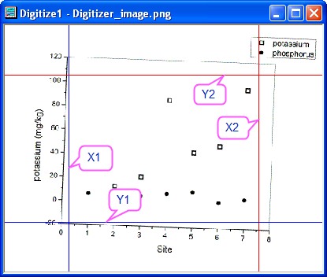
- Klicken Sie auf die Schaltfläche Bild drehen (Symbolleiste des Dialogs) und klicken Sie auf die Schaltfläche , um das Bild leicht gegen den Uhrzeigersinn zu drehen. Beachten Sie, dass das Inkrement für die Drehung im Feld << >> Inkrement (Grad) festgelegt werden kann.
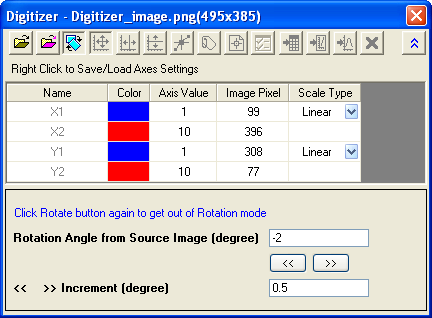
Wenn die Diagrammachsen im Bild entlang der Kante unten/oben und links/rechts ausgerichtet sind, klicken Sie einmal auf die Schaltfläche Bild drehen , um den Modus Drehen zu verlassen.
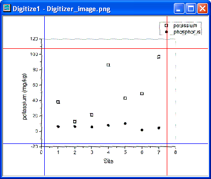
- Klicken Sie auf die Schaltfläche Achsen bearbeiten in dem Dialog. Ziehen Sie mit Ihrer Maus an den beiden Achsenlinienpaaren, bis sie auf den minimalen und maximalen Achsenwerten liegen. Beachten Sie, wenn eine Linie ausgewählt wird, wird ebenfalls die ihr entsprechende Zeile im Dialog ausgewählt. Geben Sie den geeigneten Koordinatenwert (0, 8, -20, 120) in die Spalte Achsenwert ein.
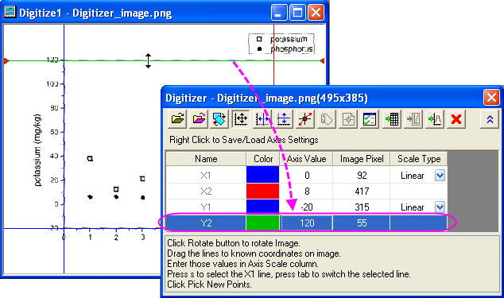 - Nach dem Festlegen der Achsen klicken Sie auf die Schaltfläche Punkte auswählen. Verschieben Sie den Cursor 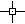 nacheinander über die Punkte in dem Phosphordiagramm (gefüllte Symbole) und klicken Sie doppelt auf jeden Punkt (oder klicken Sie einmal und drücken Sie Enter). Der Dialog Punkte holen zeigt die Koordinatenwerte, während das Fenster Datenanzeige die Bildpixel anzeigt.
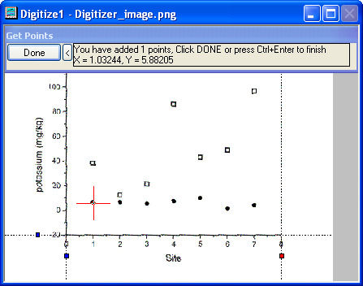 - Wenn Sie alle Punkte zu dem Phosphordiagramm hinzugefügt haben, klicken Sie auf die Schaltfläche Fertig.
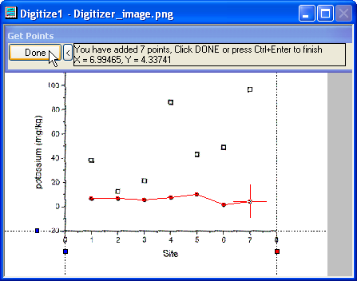 - Klicken Sie auf die Schaltfläche Zu den Daten 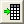, um das sich ergebende Arbeitsblatt anzuzeigen, das die Werte der ausgewählten Datenpunkte enthält.
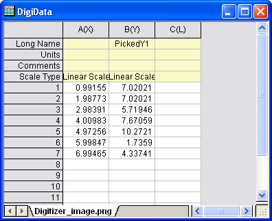 - Klicken Sie auf die Schaltfläche Zum Bild
 , um zum Originalbild zu wechseln. Klicken Sie auf die Schaltfläche Neue Linie , um die Digitalisierung der zweiten Zeichnung (Potassium = offenes Symbol) zu initiieren. Beachten Sie, dass die zwei neuen Spalten der Datenpunkte in dem Ergebnisarbeitsblatt erstellt werden.
, um zum Originalbild zu wechseln. Klicken Sie auf die Schaltfläche Neue Linie , um die Digitalisierung der zweiten Zeichnung (Potassium = offenes Symbol) zu initiieren. Beachten Sie, dass die zwei neuen Spalten der Datenpunkte in dem Ergebnisarbeitsblatt erstellt werden. - Klicken Sie auf die Schaltfläche Neue Punkte auswählen , um die Punkte für die zweite Zeichnung durch Wiederholung der Schritte 5 und 6 zu wählen.
- Wenn Sie jetzt auf die Schaltfläche Zu den Daten klicken, werden die Ergebnisse der zwei Datensätze im Arbeitsblatt gezeigt.
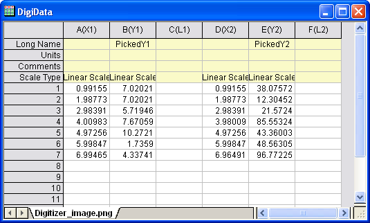 - Klicken Sie auf die Schaltfläche Zum Bild. Sie gelangen zu Ihrer importierten Bilddatei. Klicken Sie auf die Schaltfläche Zum Diagramm 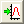. Hierdurch wird ein Diagrammfenster geöffnet, das Diagramme Ihrer digitalisierten Datenpunkte enthält.
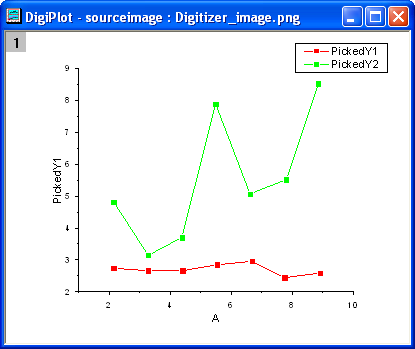 - Wenn Sie den Dialog des Digitalisierers schließen, wird die Schaltfläche Digitalisierer... auf dem Bild angezeigt. Klicken Sie auf die Schaltfläche. Der Dialog Digitalisierer wird erneut geöffnet.
Ausgewählte Punkte verschieben und löschen
Wenn Sie den Schritten im oben stehenden Abschnitt folgen, erhalten Sie auf einfache Weise die Punkte aus dem Bild. Wenn sich die ausgewählten Punkte jedoch nicht in korrekter Position oder abseits befinden wie Punkt A und B in dem Bild unten, können Sie sie modifizieren oder löschen.
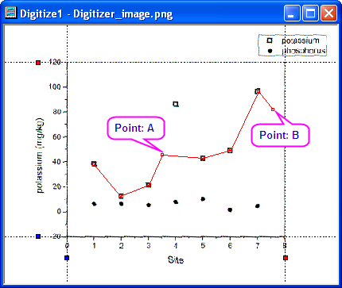
- Um die Position von Punkt A zu ändern, klicken Sie auf ihn und verschieben Sie den Cursor in die richtige Position. Sie können alternativ auch die Pfeiltasten verwenden, um den ausgewählten Punkt zu verschieben.
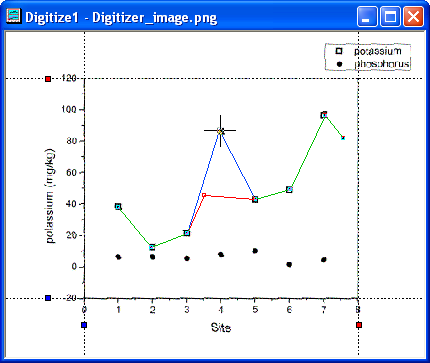
- Um Punkt B zu löschen, klicken Sie auf ihn und dann mit der rechten Maustaste, um im Kontextmenü die Option Löschen zu wählen. Oder Sie drücken Sie Taste Entfernen, um den ausgewählten Punkt zu löschen.